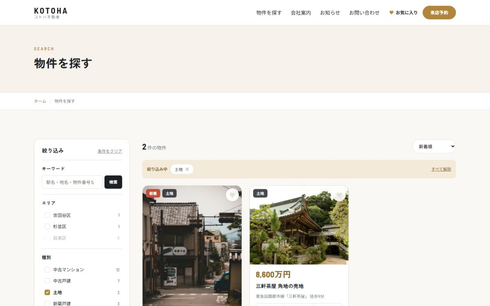
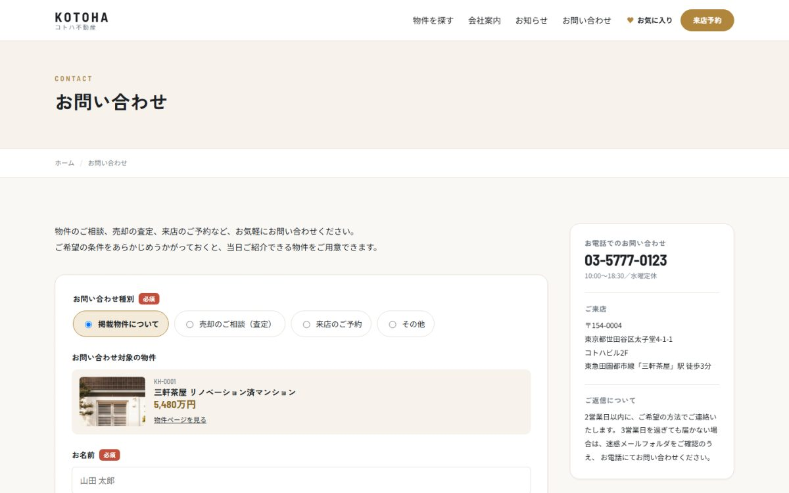
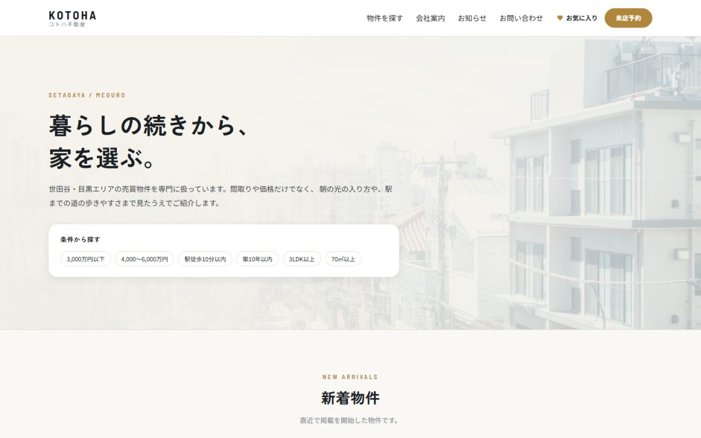

不動産（売買）／ WordPressテーマ開発
コトハ不動産
エリア・種別・価格帯・間取り・駅徒歩・築年数・こだわり条件を掛け合わせて物件を絞り込めるサイトです。 検索という「静的サイトでは作れない部分」を主眼に置いて制作しました。




| 種別 | 不動産（売買）／架空の会社を想定した自主制作 |
|---|---|
| 担当範囲 | 企画・データ設計・デザイン・実装・公開 |
| 使用技術 | WordPress（クラシックテーマ）／ PHP ／ JavaScript ／ MySQL |
| 掲載データ | 物件24件（価格3,280万〜1億2,800万円） |
| 制作物 | テーマ本体 21ファイル ／ デプロイ用パッケージ |
なぜ検索機能を主題にしたか
物件検索、求人検索、店舗検索は、実装としては同じ問題です。 複数のタクソノミー、数値の範囲、キーワードを組み合わせて絞り込む。 静的サイトでは原理的に作れない領域で、実際の案件でも手が足りなくなりやすいところだと考え、 あえてここを中心に据えました。
検索条件をすべてURLで表現する
絞り込みの状態をURLのクエリ文字列に載せています。
/properties/?area=setagaya,meguro&type=mansion&price_max=6000&sort=price_asc
- 検索結果をそのまま共有・ブックマークできる
- ブラウザの戻る・進むが自然に動く
- 検索エンジンが各条件のページを辿れる
Ajaxで結果を差し替えたときも、History APIでURLを書き換えて状態と一致させています。
JavaScriptが無効でも検索できる
絞り込みのUIは、サーバー側で「ただのリンク」として出力しています。 JavaScriptが無効ならリンクを踏んでページが切り替わり、有効ならJavaScriptがそのリンクを横取りして 結果だけを差し替えます。通信に失敗した場合も、通常のページ遷移にフォールバックします。
選ぶ前に件数が分かる
各選択肢の横に、その条件を足したときの件数を表示しています。0件になる選択肢は選べません。 素朴に実装すると選択肢ごとに件数を数えるクエリが飛んで数十回になるため、 「そのグループの条件だけ外した結果」を1回だけ取得し、PHP側で集計する方式にしました。
つまずいた点：件数がすべて「1」になった
WordPressの wp_get_object_terms() は、既定でタームを重複排除して返します。
そのまま数えると、どの選択肢も1件になってしまいました。
「投稿×ターム」の組で受け取る指定が必要だと分かり、修正しています。
テストで各グループの合計が全件数と一致するか確かめて気づきました。
つまずいた点：キーワード検索がカスタムフィールドに当たらない
「桜新町」「小田急線」といった語は本文ではなくカスタムフィールドに入っているため、 標準の検索では引っかかりません。検索条件を書き換えて対応したのですが、 WordPressは検索条件の末尾にパスワード判定の条件を連結する仕様のため、 追加した条件がそちらに紛れ込んで0件になっていました。 パスワード判定をいったん切り離してから書き換える形に直しています。
つまずいた点：物件を指定した問い合わせが404になる
物件詳細から「この物件を問い合わせる」で進むと対象物件が引き継がれるようにしたのですが、
パラメータ名をカスタム投稿タイプと同じ property にしたため、
WordPressが「そのスラッグの物件を表示」と解釈して404になりました。
別の名前に変更して解決しています。
お問い合わせフォーム
プラグインを使わずに実装しました。物件詳細から進むと対象物件が引き継がれ、 種別で入力欄が切り替わります。入力エラーで戻ったときに入力内容が消えない点にも気を配りました。 スパム対策も、画面外の入力欄と送信までの経過時間で判定しています。
送信内容は非公開の形で保存し、管理画面から確認できます。 直接URLでもREST APIでもサイト内検索でも露出しないことを確認済みです。
公開まで
Heroku上で動かしています。無料のデータベースには「1時間あたり3,600クエリ」の上限があり、 サンプルデータの投入中にこれに当たって止まりました。 投入済みのデータベースを一括で流し込む方式に変え、約135ステートメントで済むようにしています。